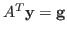
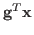
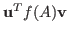

In this paper we seek to develop iterative methods that are more robust
and efficient than existing methods for solving the forward (
 ) and adjoint (
) and adjoint (

) systems of linear equations where the coefficient matrix is large, sparse, and nonysmmetric. We can use these methods to approximate the scattering amplitude defined by
. We use a conjugate gradient-like iteration for a nonsymmetric saddle point matrix that is constructed so as to have a real positive spectrum, and a full set of eigenvectors that are orthogonal in some sense. The preservation of these properties allows us to generalize the conjugate gradient method to one for nonsymmetric matrices. We find that this method performs more consistently in the initial iterations than known methods for computing the scattering amplitude such as GLSQR or QMR. We also look into using techniques from "matrices, moments, and quadrature" to approximate expressions of the form
, where